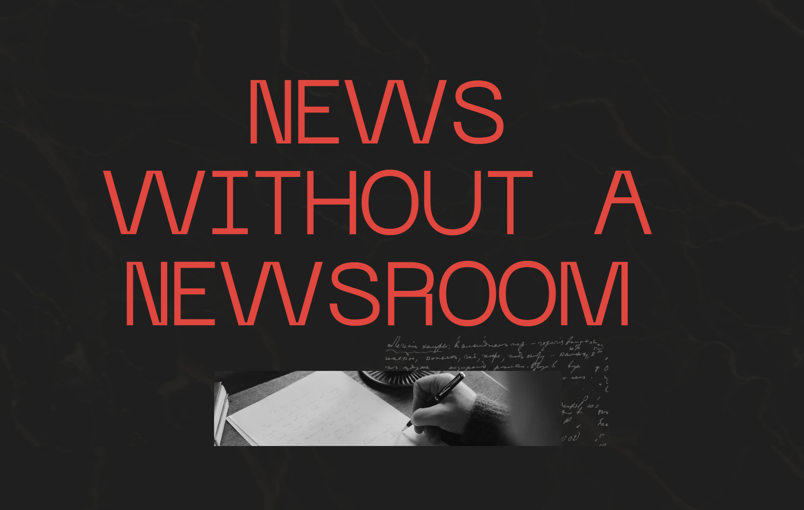

Motion Pictures
MG Animation Assasin`s Creed : Ballrotherhood Prologue
My Position: Artist, Storyboard, Animator, and editor.
Retold the story of the prologue of Assassin`s Creed : Brotherhood in the style of webcomic Country Ball. It is the final project of course "Intro to 2D Animation", drew in Adobe Fresco, refine in Adobe Illustrator, animated in After Effects and edited in Premiere Pro.
Documentary
Magic
My Position: Editor
In this digital age, where narratives are influenced and perceptions molded by ever-expanding online platforms, authentic journalism stands at a pivotal crossroads. "News Without a Newsroom" serves as an insightful exploration into the transformative trajectory of journalism. With testimonies from esteemed figures such as Leonard Pitts Jr. and Maggie Steber, complemented by expert insights, the film aims to chart the dynamic trajectory of contemporary news reporting. Visite website
News without a Newsroom
My Position: Editor
In this digital age, where narratives are influenced and perceptions molded by ever-expanding online platforms, authentic journalism stands at a pivotal crossroads. "News Without a Newsroom" serves as an insightful exploration into the transformative trajectory of journalism. With testimonies from esteemed figures such as Leonard Pitts Jr. and Maggie Steber, complemented by expert insights, the film aims to chart the dynamic trajectory of contemporary news reporting. Visite website
Music Video
Fusion 2
My Position: Cinematography, Editor
In this digital age, where narratives are influenced and perceptions molded by ever-expanding online platforms, authentic journalism stands at a pivotal crossroads. "News Without a Newsroom" serves as an insightful exploration into the transformative trajectory of journalism. With testimonies from esteemed figures such as Leonard Pitts Jr. and Maggie Steber, complemented by expert insights, the film aims to chart the dynamic trajectory of contemporary news reporting. Visite website
The Great Wandering
My Position: Storyboard, Editor
In this digital age, where narratives are influenced and perceptions molded by ever-expanding online platforms, authentic journalism stands at a pivotal crossroads. "News Without a Newsroom" serves as an insightful exploration into the transformative trajectory of journalism. With testimonies from esteemed figures such as Leonard Pitts Jr. and Maggie Steber, complemented by expert insights, the film aims to chart the dynamic trajectory of contemporary news reporting. Visite website
| Yu Zhou | Game Designs | Level Designs | Other Projects | |
|---|---|---|---|---|
| HOME PAGE | Timely Shot | WAVES - Portal 2 | Physical Computings | |
| Before the Rainstorm | Storm Remnants - UEFN | Visual Designs | ||
| Duckrossing | Esports Podcasts | |||
| yuzhou020606@163.com | Earlier Concepts | Motion Pictures |